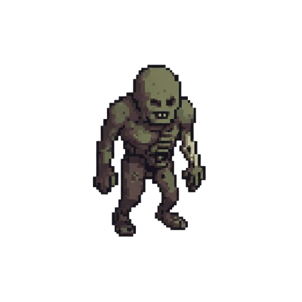
Shambling Corpse
Description: Slow, decaying humanoid that lumbers directly toward the player.
Mechanic: Low health, very low movement speed. Its only threat is getting overwhelmed by numbers or its Grasp attack, which briefly slows the player if it hits.
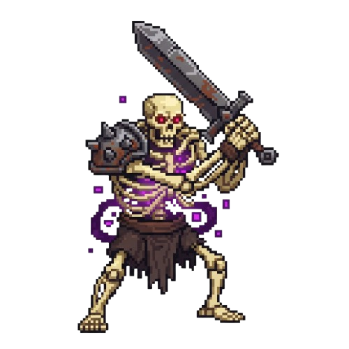
Skeleton Warrior
Description: A common but dangerous early-game enemy.
Mechanic:
- Heavy Cleave: A slow, predictable, but high-damage swing. Requires a timed dodge from the player.
- Bone Quake: Stops and emits a magical, rattling "roar" that briefly slows the player's movement speed upon hit.
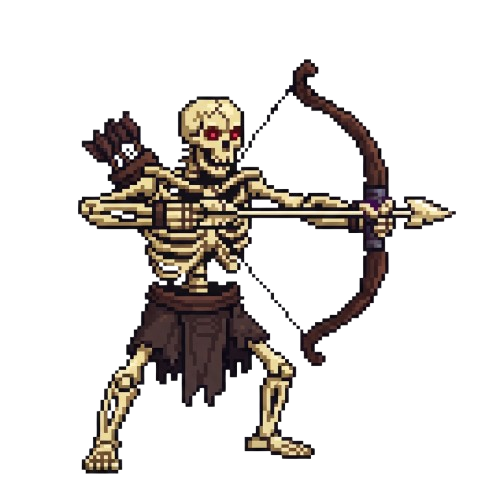
Skeleton Archer
Description: A bare-bones skeleton, surprisingly agile, wielding a crude bow.
Mechanic: Stays at a medium distance and fires slow, easy-to-dodge projectiles. If the player gets too close, it will clumsily try to hit them with the bow (a very weak melee attack) before rolling away to reset its range.
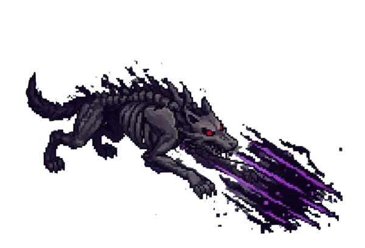
Gravehowler
Description: A skeletal wolf-like creature wreathed in shadow. It is fast and agile but fragile, relying on sudden strikes rather than endurance.
Mechanic: Leaps at the player with a Shadow Slash, applying a Cursed Mark that increases all subsequent damage the target takes.
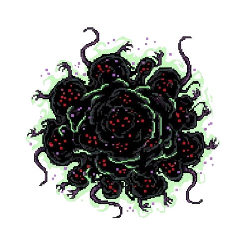
Infested Rat Swarm
Description: A mass of glowing-eyed rats, animated by necrotic energy, moving as a single, shifting blob.
Mechanic: Fast, low damage, and high aggression. When killed, the "swarm" splits into two smaller, weaker swarms that each have their own pathing for a few seconds before expiring. Forces area control.
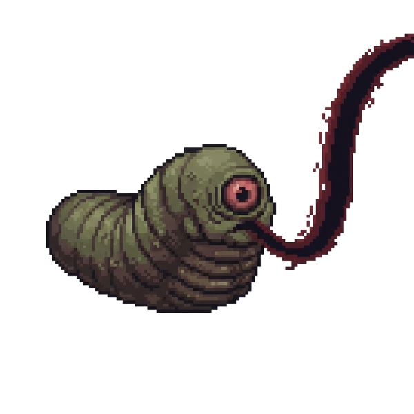
Carrion Leech
Description: A bloated, slug-like parasite that crawls slowly across the ground. It is weak in melee combat but dangerous if left unchecked.
Mechanic: It uses Vitality Siphon and fires a stream of crimson-black energy at the player, dealing damage and restoring its own health.
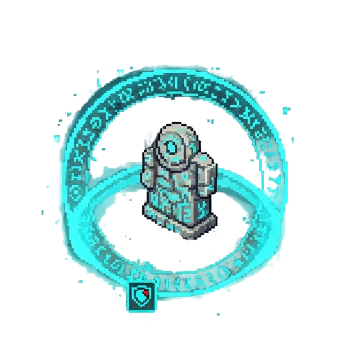
Ashen Idol
Description: A small, floating effigy of cracked stone and glowing runes. It is immobile and fragile, acting more like a trap than a fighter.
Mechanic: When struck, it uses Arcane Nova and releases a burst of magical energy, damaging and briefly interrupting nearby players while reducing their defense.
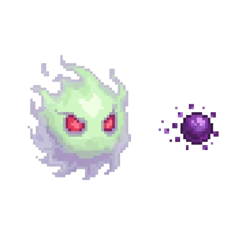
Will-o-Wisp
Description: A small, floating ball of sickly green or purple light with no physical body.
Mechanic: Cannot be damaged by standard attacks, only magic or ranged attacks. It randomly teleports short distances and fires a single, slow-moving Curse Bolt that temporarily reduces the player's attack damage.
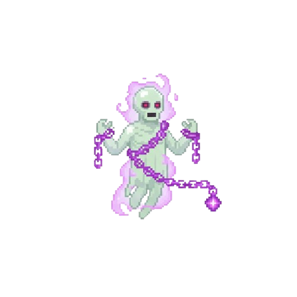
Chained Specter
Description: A translucent figure bound by heavy, glowing chains.
Mechanic: Floats slowly. It has a high chance to pass through obstacles . Its main attack is a short-range pull with its chains that drags the player toward it, often into other nearby enemies.
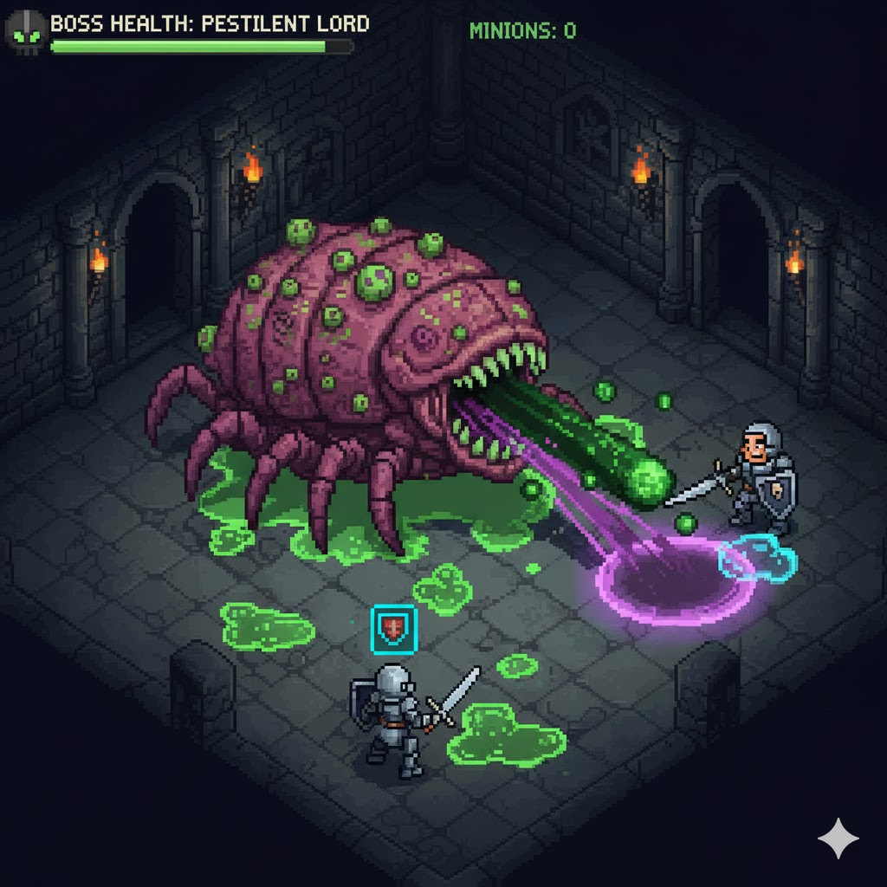
The Pestilent Lord
Description: An area-denial specialist focused on debilitating the player with disease.
Mechanic:
- Contagion Pool: The Lord continuously excretes puddles that inflict the Sickness debuff. The player must use Blink Step or Phantom Shroud to rapidly cross the contaminated area without taking too much damage.
- Vial Burst: Vial Burst: It periodically spits a large projectile that explodes into smaller, short-lived toxic AoEs. This is an excellent moment to use Void Trap to group the debris and clear the attack..

Bone Colossus
Description: A massive, towering golem crudely formed from the merged bones of multiple large creatures.
Mechanic: Slow movement, but devastating AoE attacks (a ground-slam that briefly stuns). When defeated, it doesn't just die; its massive form collapses, releasing 3-4 Skeleton Warriors that it was formed from, forcing the player to clear a second, quick wave of enemies.
- Earthen Shield: Raises a barrier of rock that blocks frontal attacks. When it shatters, it releases a shockwave that knocks enemies back.
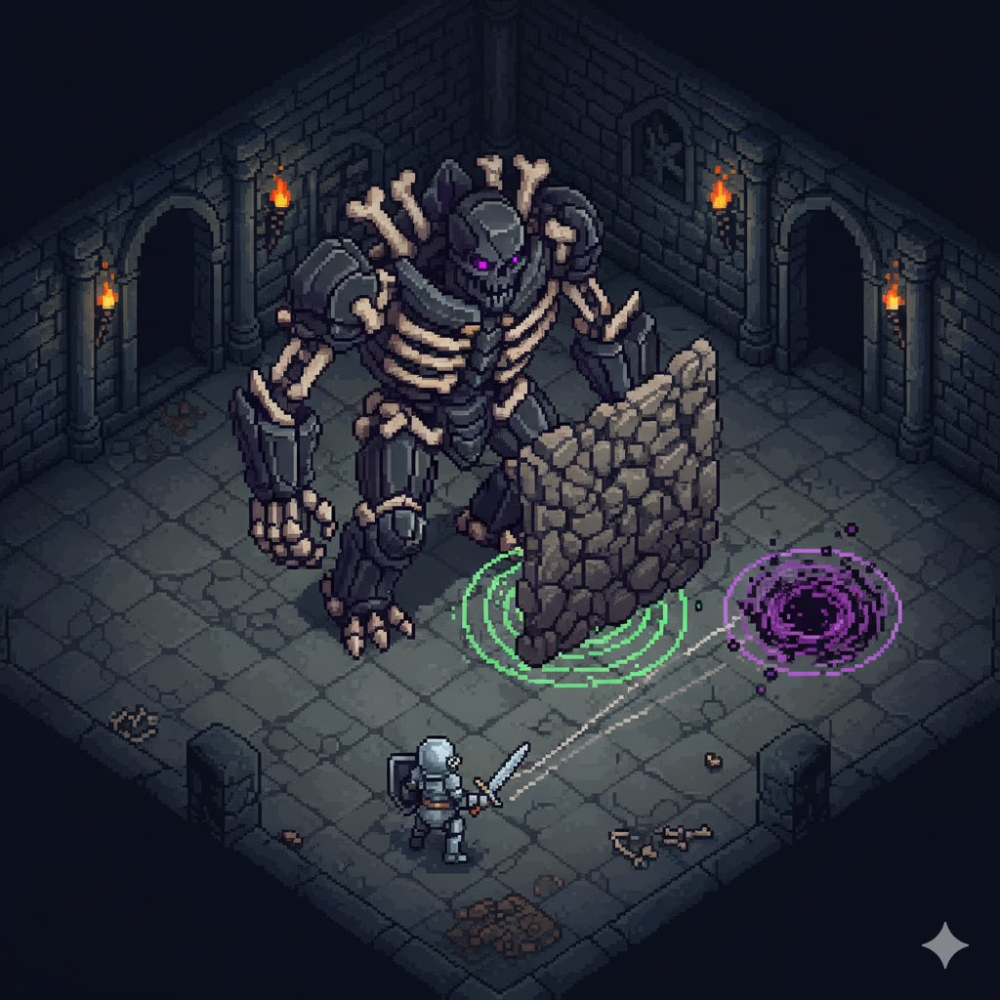
Obsidian Warden
Description: A towering construct of black stone and bone fragments, moving with deliberate slowness but immense resilience.
Mechanic:
- Earthen Shield: Raises a barrier of rock that blocks frontal attacks. When it shatters, it releases a shockwave that knocks enemies back.
- Void Trap: Throws a vortex of dark energy onto the ground, pulling players toward its center while dealing minor damage.
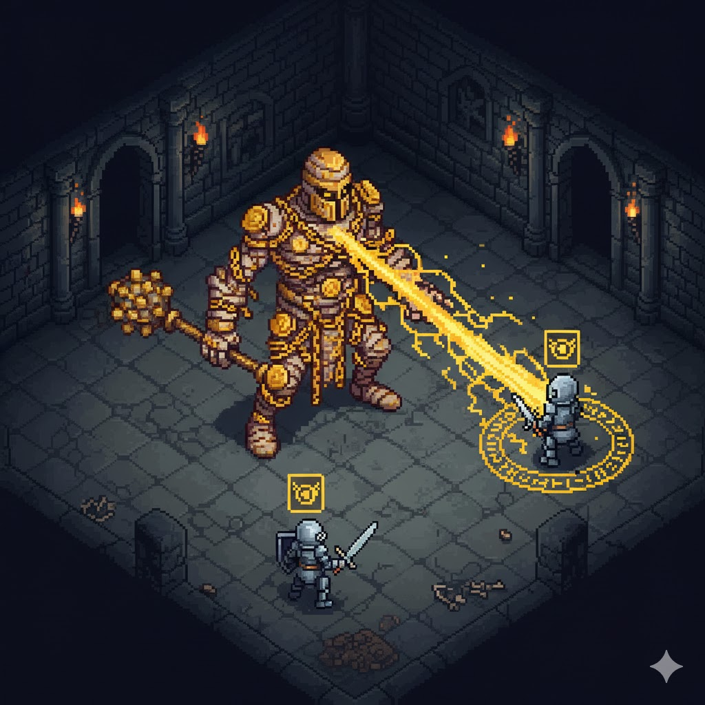
Goldbound Revenant
Description: A mummified warrior wrapped in golden chains and stitched with coins. It is slow but strikes with heavy, deliberate blows.
Mechanic: Uses Midas Touch to curse the player, the next few seconds when the player is hit he drops gold or rare enchants.
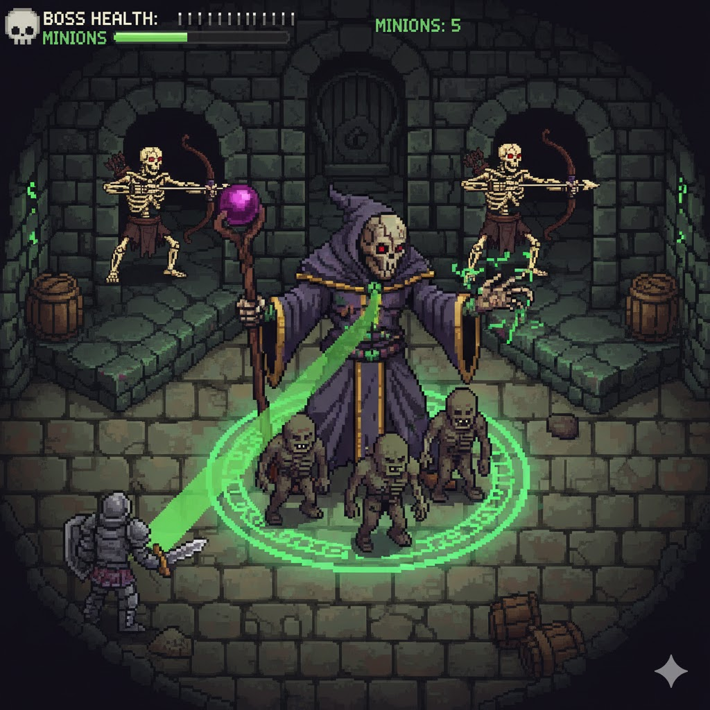
The Reanimator
Description: A corrupted priest or disgraced necromancer still clinging to a sliver of life.
Mechanic: It stays out of melee range and focuses on summoning a constant stream of 1-2 low-tier undead (Skeleton Warrior or Skeleton Archers). The player must prioritize killing The Reanimator quickly, as the battlefield will otherwise become completely overrun. He also have a slow-to-cast Soul Drain beam.
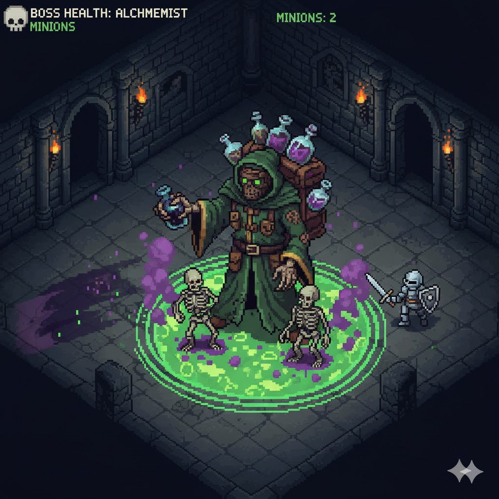
The Plague Alchemist
Description: A grotesque figure in a tattered alchemist's robe, carrying a leaking pack of foul vials. It is frail in close combat but highly mobile and dangerous at range.
Mechanic:
- Pestilence Well: Smashes a vial to create a pool of contagion that damages enemies standing in it and reduces their damage output after leaving.
- Grave Echo: Summons temporary skeletal servants from nearby corpses or by sacrificing its own vitality.
- Phantom Shroud: Dashes rapidly through the battlefield, becoming invulnerable during the dash but slowed afterward.
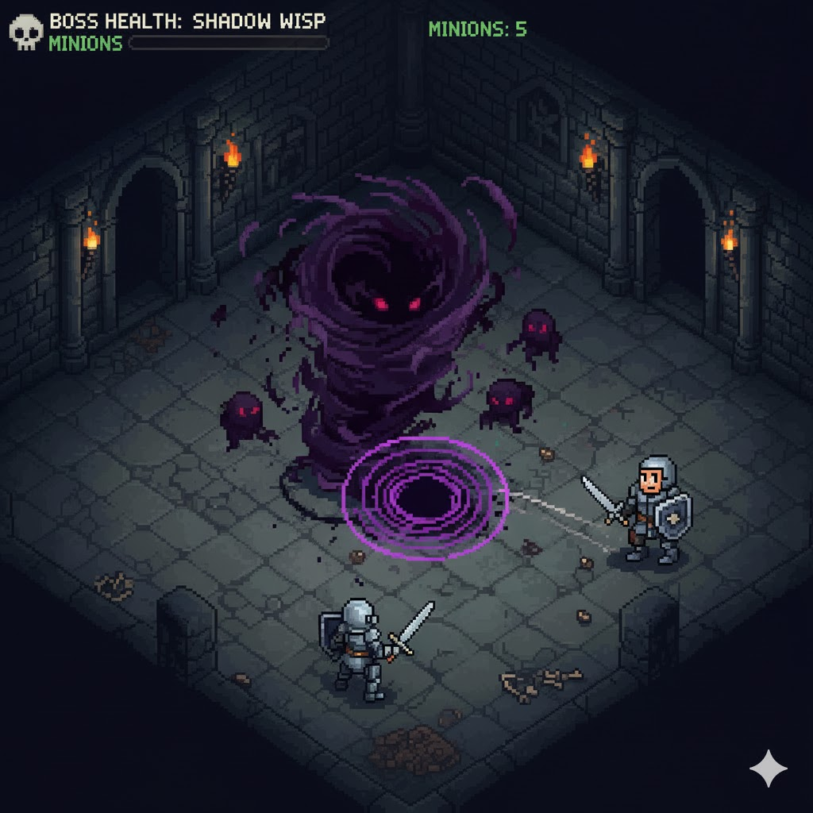
The Shadow Wisp
Description: A massive, swirling entity of pure shadow and malicious intent. It is semi-transparent and moves erratically.
Mechanic: It dashes frequently, dealing high damage on impact. Its main move is Void Surge, where it teleports to the center of the arena, rapidly spawns smaller shadows, and then unleashes a radial attack. The key to beating it is using Void Trap to group and stall the smaller shadows, allowing the player to focus the main Wisp during its vulnerable moments.
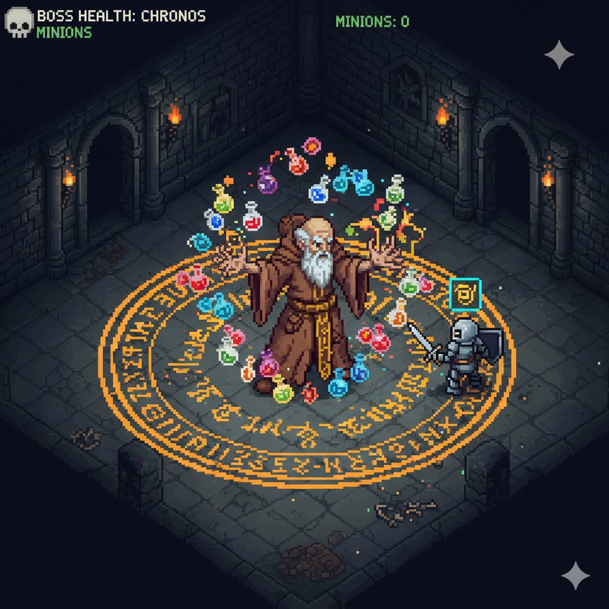
The Chronos Alchemist
Description: A frail-looking mage in tattered robes who floats behind a series of volatile, glowing vials that act as his shield.
Mechanic: He mainly attacks by throwing random, exploding vials. Periodically, he will cast a Time-Lock Field (large AoE). The player must use Blink Step to escape or Earthen Shield to block the impending damage when the field detonates. Defeating him requires high-burst damage and careful positioning.
Aethelgard
AKA. "Necromancer"
Description
Aethelgard is not a risen corpse or a man. It achieved ██████, ██ █ ██ ████ █████ ████. Visually, it manifests as a towering, asymmetrical spire of calcified, dark-grey bone, laced with pulsating veins of sickly necrotic light. It doesn't move so much as shift, grinding and cracking the floor with every ponderous step.
Instead of a head, its central mass is dominated by the titular ████-██████: a gaping, silent void where thousands of ghostly, flickering blue and green faces are permanently sealed, swirling like a slow-moving, sinister galaxy. This void is where it draws and holds the essence of every soul that falls within the cursed lands.
Legend says Aethelgard was the ritual core of a forgotten necromantic civilization. It wasn't built; it grew from the single, cataclysmic act of anchoring an entire city's ████ ██ ██████ to the material world. It is the permanent sinkhole of spirit energy, the reason death in your game world is never truly final, and the source of all the spreading corruption. To defeat Aethelgard is not just to kill a boss, but to re-release the primordial energy of the dead and lift the curse from the land.
The Obfuscating Truth: The ████-██████ does not just draw in the spirits of the dead; it actively erodes the fabric of knowledge relating to its own existence. Any document, carving, or historical record that bears the name Aethelgard or describes the █████████ ███████+ becomes increasingly corrupted.and ultimately ending's existance
The letters twist, the ink fades and bleeds, and the text itself seems to "shift" before the eyes, becoming almost painfully difficult to read and comprehend—as if the document is actively fighting the reader's understanding. Scholars who dedicate themselves to its history often go mad.

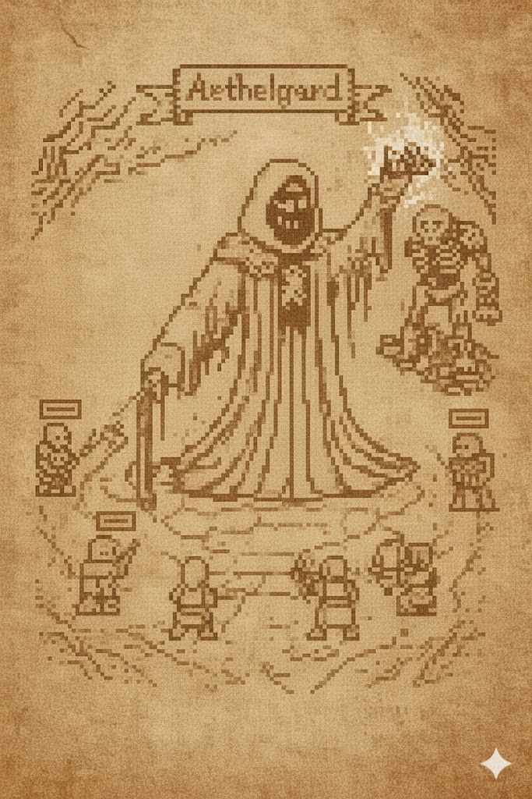
Encounter
The fight against Aethelgard is a brutal test of endurance and target prioritization.
The Anchor's Grip: Periodically, the central void emits a vast, invisible wave. This doesn't deal damage directly, but every low-tier undead (like Shambling Corpses) currently on the field is instantly healed and permanently empowered, gaining a damage and speed buff. This forces the player to keep the battlefield clear.
Calcified Aegis: The towering bone body is highly resistant to physical damage. The only weak point is the glowing necrotic veins that pulse across its surface; the player must wait for these veins to temporarily overload and flash purple before dealing significant damage.
The Soul Leech: Aethelgard occasionally lashes out with a slow, sweeping attack using one of its massive bone appendages. If this hits the player, it drains a huge chunk of health and immediately summons a high-tier enemy (like The Reanimator or Bone Colossus) to the arena.